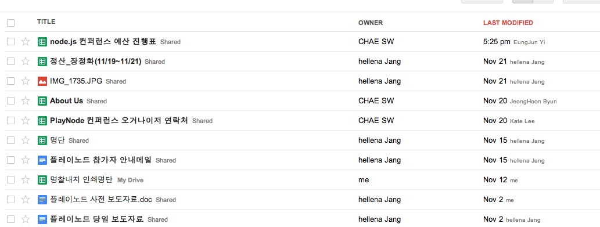

About Author

Insanehong
blog: http://insanehong.kr
twitter: @insanehong
github: insanehong.github.com
- NAVER Corporation, Front-End Engineer(2013~)
- Like Javascript, Dart, HTML5, CSS3,Responsive Web, Haroopress, Frends, Lean Startup, Open Source
- Hackrslab co-founder
- About me http://about.me/insanehong
About this Article
Date Released:
Sunday, November 25 2012 8:15 PMPlaynode 컨퍼런스를 끝마치다.
Node.js Korea Conference 1st. Play.node() 가 끝나다.
국내에서 열린 첫번째 node.js 컨퍼런스가 끝이 났다.
오거나이저로 활동하면서 이번 컨퍼런스를 준비하는 동안의 에피소드들은 이미 앞전 글에서 써내려갔으니 이번글에서는 컨퍼런스를 마친 그 뒷이야기를 조금 해보려고 한다.
오거나이저들은 오프라인에서 만난적이 거의 없었다.
이번 컨퍼런스를 준비하면서 오거나이저들은 오프라인에서 겨우 한두번 얼굴을 봤을 뿐이다. 실제 모든 준비와 커뮤니케이션은 google groups와 google drive를 통한 이슈 공유와 의견제시로 이루어 졌다.

그리고 좀 늦게 도입되긴 했지만 trello를 통해 TODO를 관리했다.
거이 모든 일들이 온라인을 통해서 이루워졌다는 사실은 매우 재미 있는 일이다. IT 기술을 이용해서 굳이 만나지 않아도 서로의 생각을 듣고, 할일을 체크하고, 준비과정을 진행 할수 있었으며 대부분의 커뮤니케이션이 실시간으로 이루어졌다는 것은 정말 개발자스럽고도 놀라운일이 아닌가?
이렇게 온라인 협업을 통한 준비과정을 지켜보면서 우리나라에서도 충분히 재택근무가 가능할 것이라는 확신을 가지게 되었다. 재택근무는 말도 안된다는 사람들에게 좋은 본보기가 되지 않았나 싶기도 하다.
컨퍼런스를 성공적으로 만들어보자.
성공적인 컨퍼런스를 위해서 내가 할수 있는 일은 준비과정동안 내가 맡은 일에 대해서 다른 사람입에서 잘했네 못했네 어쩌네 하는 그런 말이 절대로 나오지 않게 하는 거였다.
물론 다른 오거나이저들도 모두 같은 마음이였을 거라 생각한다. 그리고 오거나이저 중 그 누구도 대충대충 하지 않았다는 것을 밝힌다. 다만 내 스스로에게 있어서 조금 독하게 채찍질 했던 것은 사실이다.
얼떨결에 맡은 오거나이저로서 대충대충 했다는 소리를 듣지않기위해 많은 노력을 했다.
사진에 대한 저작권은 원작자 @Outsideris에게 있으며 Creative Commons license의 적용을 받습니다.
사실 "그런거 왜 하고 있냐?" 라는 말을 많이 들었다.
이번 컨퍼런스 오거나이저를 하면서 가장 많이 들은 얘기는 그거해서 얻는게 뭐냐? 라는 말이다.
그런데 정작 중요한 것은 그 질문에 내가 할수 있는 대답이 마땅히 없었다.
오거나이저를 하면 나에게 어떤 도움이 되는가?
많은 생각을 한 끝에 이번 컨퍼런스 오거나이저로서 내가 얻어가는 것 한가지를 떠올렸다.
국내 최초로 열렸던 node.js 컨퍼런스를 준비한 사람이라는 기록을 남기는 것
누군가 playnode를 이야기 하거나 컨퍼런스를 찾는 사람들에게 혹은 이후에 열리는 컨퍼런스에서도 첫회를 준비했던 오거나이저로서 기록으로 남기고 그 기록을 자랑럽게 얘기 할 수 있는 것이 나의 목표가 되었다.
하지만 그렇게 되기 위한 가장 첫번째 조건을 충족 시켜야 했다. 성공적인 컨퍼런스가 되어야 했다.
결론적으로 나의 계획은 명백한 실패로 끝났다. 컨퍼런스가 실패 하였단것이 아니라 컨퍼런스의 주인공은 뭐니뭐니 해도 Speakers 이고 내가 오거나이저라는 사실을 남들이 찾아보기도 힘들었을 뿐더러 그다지 관심이 가지도 않았을 것이라 생각하기 때문에 실패로 끝났다는 것이다.
사진에 대한 저작권은 원작자 @Outsideris에게 있으며 Creative Commons license의 적용을 받습니다.
컨퍼런스의 주인이자 메인인 Speakers
개인적으로 모든 컨퍼런스의 주인이자 메인 얼굴은 역시 Speakers 라고 생각한다. 하지만 이부분이 가장 걱정스러운 부분이기도 했다.
발표에 대한 퀄리티에 대해서는 내가 할수 있는 일이 없었다. 어디까지나 Speaker 개인의 역량이고 발표를 받아들이는 청중의 몫이기도 하다. 그런의미에서 개인적으로 많은 걱정을 하기도 했다.
해외에서 온 연사들 @izs , @mikeal , @indexzero 들은 그저 메인요리를 위한 에피타이져라고 생각했다. 컨퍼런스를 빛내주기는 하지만 이들이 메인이 되어서는 절대 안되는 일이라는게 내 생각이기 때문이다. 그렇기 때문에 국내 연사들의 발표가 좋아야만 컨퍼런스가 성공적이였다는 평가를 받을 수 있다고 생각했다.
그렇다고 오해는 하지 않길 바란다. 결단코 발표자들의 수준이 낮다고 생각해서 걱정한건 아니다.
다만 발표자들과 오거나이저들과의 만남의 시간을 가져본적이 거의 없었기 때문에 이들이 말하려 주제가 무엇인지는 잘 알고 있지만 그 내용을 어떤 식으로 풀어갈지는 발표 당일까지도 전혀 알지 못했다.
그렇게 때문에 발표 내용보다는 발표방식에 대해서 걱정스러웠다. 발표내용은 매우 좋지만 발표하는 방법에서 실망하는 경우도 종종 있기 때문에 걱정을 했던 것이다.
실패한 계획. 하지만 얻은건 있었다.
컨퍼런스 당일 나의 임무는 해외연사들이 하고 싶어하던 한국을 둘러보는 것을 도와주는 것이였다. 영어 구사 실력이 형편 없는 나에게는 어림없는 일이기 때문에 @hellena_Jang이 가이드겸 통역을 맡아 주었다. 이들과 함께 다니며 해외연사들이 알아듣던지 말던지 내가 하고 싶은말을 막 던져 보았다. 다행히 그들이 알아들은 것도 있고 통역을 다시 해주어야 하는 경우도 있었다.
가이드를 마치고 다시 컨퍼런스룸으로 돌아왔을때 통역자가 없는 상황에서 얼떨결에 내가 통역을 해야하는 상황이 발생했다. 역시나 나의 어휘력은 후달리기 시작했고 되도 않는 영어로 이들에게 설명하고 역통역을 해주었다.
앞으로 언제가 될진 모르지만 내가 하고 싶은 말을 내가 스스로 하고 싶다는 생각이 불끈 불끈 솟기 시작하는 순간 이였다. 그래서 요즘 영어를 다시 공부하기 시작했다.
사진에 대한 저작권은 원작자 @Outsideris에게 있으며 Creative Commons license의 적용을 받습니다.
컨퍼런스를 마치고 좋았던점.
- 온라인을 통한 협업도 충분히 성공적으로 진행 될수 있다는 것을 알게 되었음.
- 내이름을 걸고 개최한건 아니지만 컨퍼런스를 처음으로 준비 해봤다는 경험을 얻게됨.
- 영어의 필요성을 절실하게 느끼게 해주었음.
- 집 근처에 같이 술한잔 할 수 있는 사람들이 살고 있다는 걸 알게 되었다.
컨퍼런스를 마치고 아쉬웠던점
- 인원수 제한을 너무 적게 잡았던것이 아닌가 싶다.
- 평일날 열려서 못오신 분들이 있었던거 같다.
- 해외연사들에게 haroopress을 제대로 소개 시켜주지 못했다.
- 얼리버드가 굳이 필요했었나 싶다. 사실 얼리버드는 참가인원의 불확실성에 대한 대안이였다고 생각한다.
- 이번 컨퍼런스의 꽃은 국내연사라 생각하기에 홍보과정에서 해외연사들에 대한 광고만 너무 많았다.
- 정말 많은 고생을 했던 오거나이저분들이 사람들에게 너무 알려지지 못했다.
- Speaker 분들에 대한 편의와 안내등등의 배려가 부족 했었다.
사진에 대한 저작권은 원작자 @Outsideris에게 있으며 Creative Commons license의 적용을 받습니다.
아듀 Play.node()
내년 컨퍼런스에 다시 오거나이저로 참여 할것인가?에 대한 질문에 나는 손을 들지 않았다.
나는 node.js를 사용하는 개발자가 아니다. 내가 속한 개발실에서는 node.js 개발을 권장하고 있지만 개인적인 판단하에 실무에서 node.js를 사용하지는 않는다. 이번 컨퍼런스도 얼떨결에 참여한 것이기도 하고 나보다 오거나이저로서 의욕을 가지고 더 잘해낼 분들이 많을 것이란걸 알기 때문에 아마 다음 컨퍼런스의 참여는 하지 않는게 좋을거 같다는 결정을 내렸다.
얻은것도 있었고 아쉬운 점도 많았던 컨퍼런스지만 이미 끝이 났다. 이미 지난일을 너무 오래 잡고 있는 것을 별로 좋아하지 않기 때문에 이제 훌훌 털어버렸다.
이번 컨퍼런스를 준비하신 모든 오거나이저 분들에게 다시 한번 감사의 말과 박수를 보낸다. 정말 한명 한명 많은 고생을 했고 덕분에 컨퍼런스가 잘 끝낼수 있었다고 믿는다.
그리고 개인적으로 많은 고생을 했고 오거나이저로서 준비과정에서 많은 도움을 주신 @hellena_Jang과 사진 사용을 허락해준 @Outsideris에게 감사의 말을 전한다
마지막으로 이번 컨퍼런스를 준비한 오거나이저들을 기억해주길 바라며 글을 마친다.